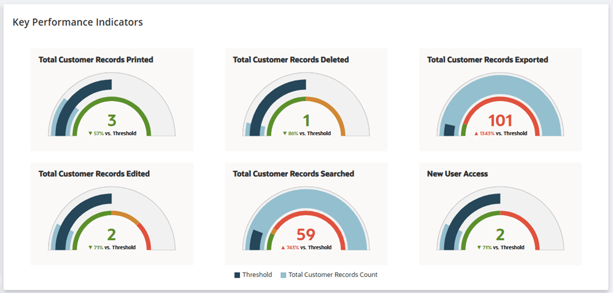
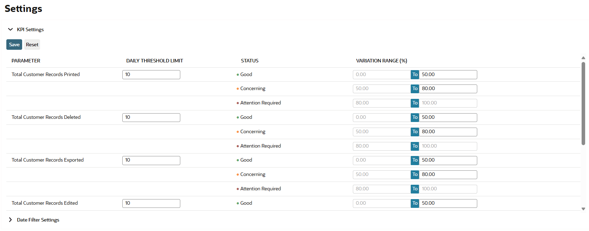
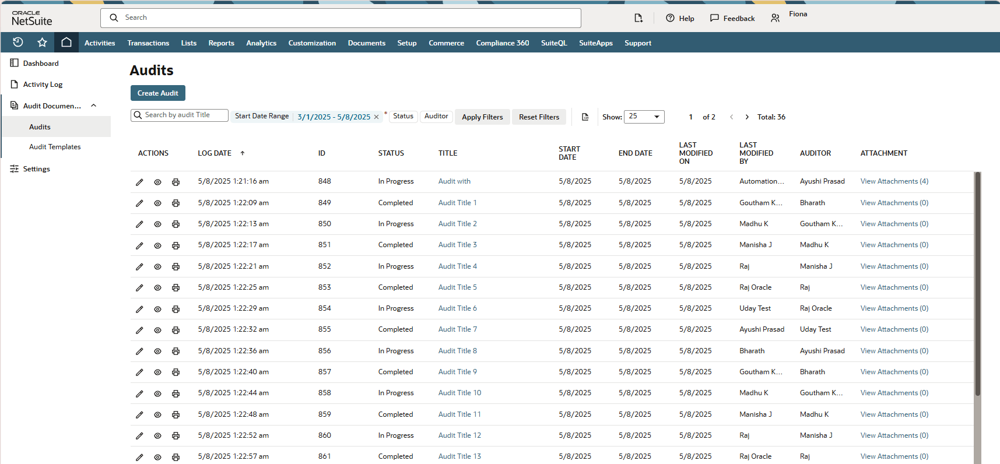

Build domain understanding
Use desk research, stakeholder interviews, feasibility conversations, and competitive review to frame the work.
CASE STUDY 03 / HEALTHCARE COMPLIANCE
Mixed-method research across two launched product phases helped compliance teams recognise unusual record activity, investigate it with context, and retrieve supporting evidence.
Research ownership · Mixed methods · Interaction design · Usability validation
Customer conversations in Phase 2
Survey evidence alongside other sources
Usability sessions across core workflows
Compliance teams needed to see how employees interacted with sensitive records and reconstruct what happened. An activity alert alone was not enough. The experience needed to preserve the actor, action, time, source, and access context as users moved from monitoring to investigation and audit evidence.
Use desk research, stakeholder interviews, feasibility conversations, and competitive review to frame the work.
Combine customer discovery, internal workshops, and a working persona to understand compliance tasks.
Bring seven customer interviews and 100 survey responses together with support cases, forums, and competitive patterns.
Run ten usability sessions across dashboards, activity logs, filtering, and investigation flows.
Teams needed an overview of activity and trends that deserved attention.
Use meaningful indicators and period comparisons rather than raw volume alone.
Investigators needed the who, what, when, and source together.
Carry context from the overview into record-level investigation.
Thresholds and time periods varied by organisation.
Support configurable thresholds, reusable filters, and stable reporting.
Role and access context changed the interpretation of events.
Use clear terminology and role-aware explanations around activity.
The research helped turn monitoring features into a connected workflow. The released direction paired activity indicators with configuration and contextual audit logs. Research supported two launched product phases; no private performance outcome is claimed.



WHAT I TAKE FORWARDIn a compliance experience, clarity gives people the control to recognise what matters, understand it, and retrieve the right evidence.
This case study describes two launched phases and public product patterns. Customer identities, private metrics, unreleased work, and roadmap details are excluded.